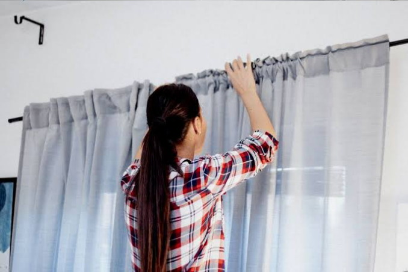

Cara Merawat Gorden agar Tetap Awet dan Bersih

Gorden tidak hanya berfungsi sebagai penutup jendela, tetapi juga sebagai elemen dekoratif penting yang dapat meningkatkan estetika ruangan. Namun, seperti elemen rumah tangga lainnya, gorden juga memerlukan perawatan rutin agar tetap terlihat prima, bersih, dan tahan lama. Yeny Gorden berbagi panduan lengkap cara membersihkan dan merawat berbagai jenis gorden agar investasi Anda tetap terjaga:
1. Identifikasi Jenis Kain Gorden Anda:
- Langkah pertama yang paling penting adalah mengetahui jenis kain gorden Anda. Material yang berbeda memerlukan metode pembersihan yang berbeda pula.
Dengan perawatan yang tepat, gorden Anda akan tetap terlihat indah dan berfungsi dengan baik selama bertahun-tahun. Jika Anda memiliki pertanyaan lebih lanjut, jangan ragu untuk menghubungi Yeny Gorden di Purwokerto.